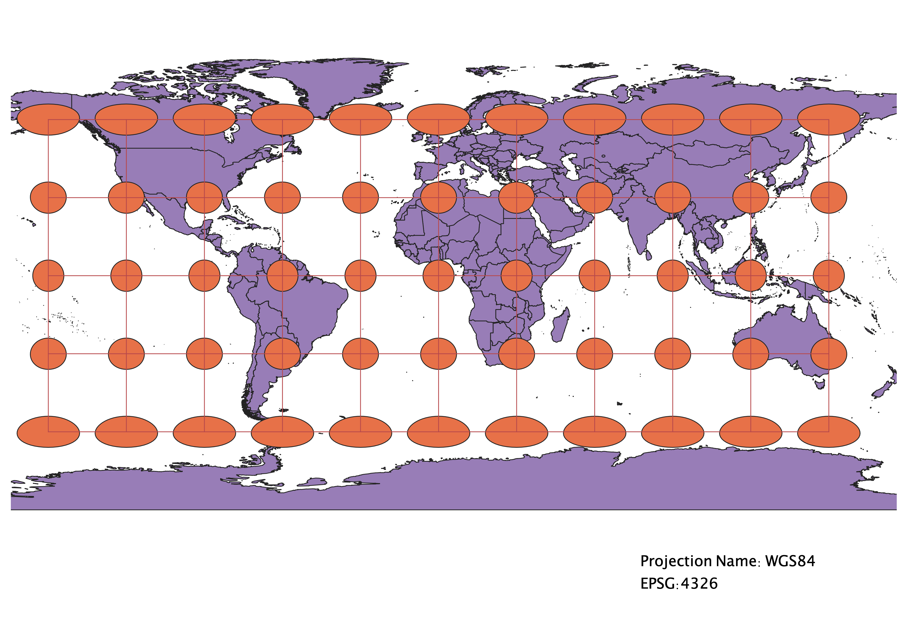
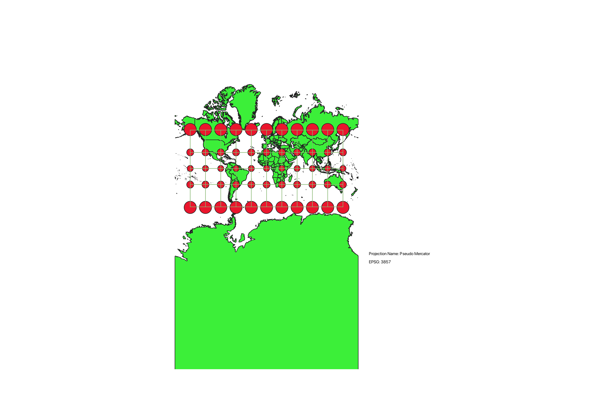
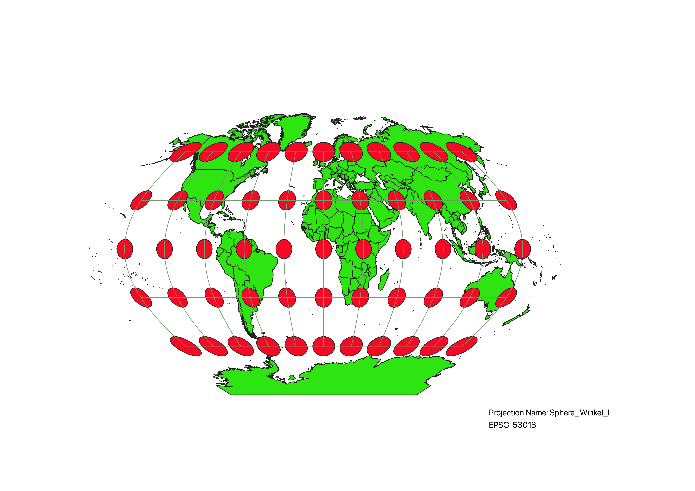
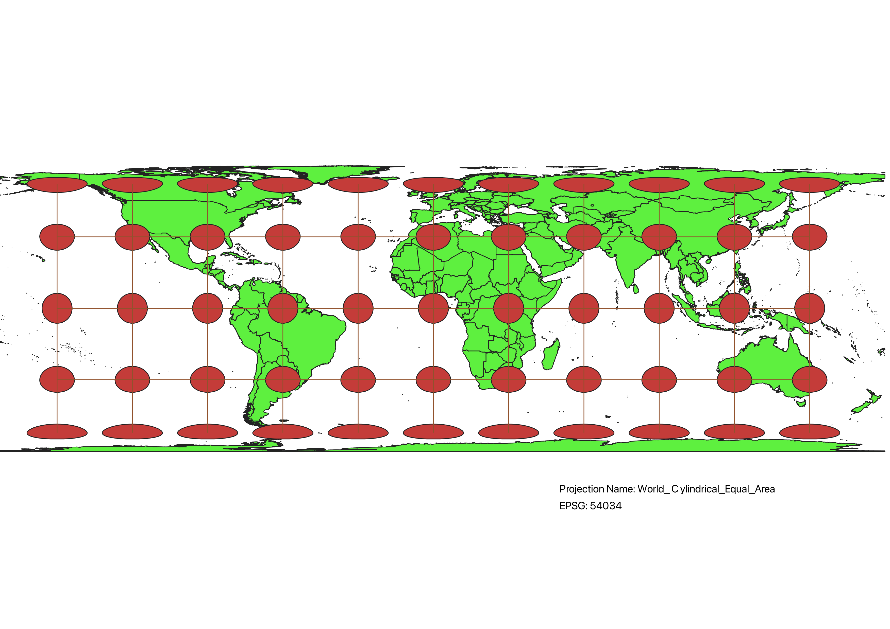
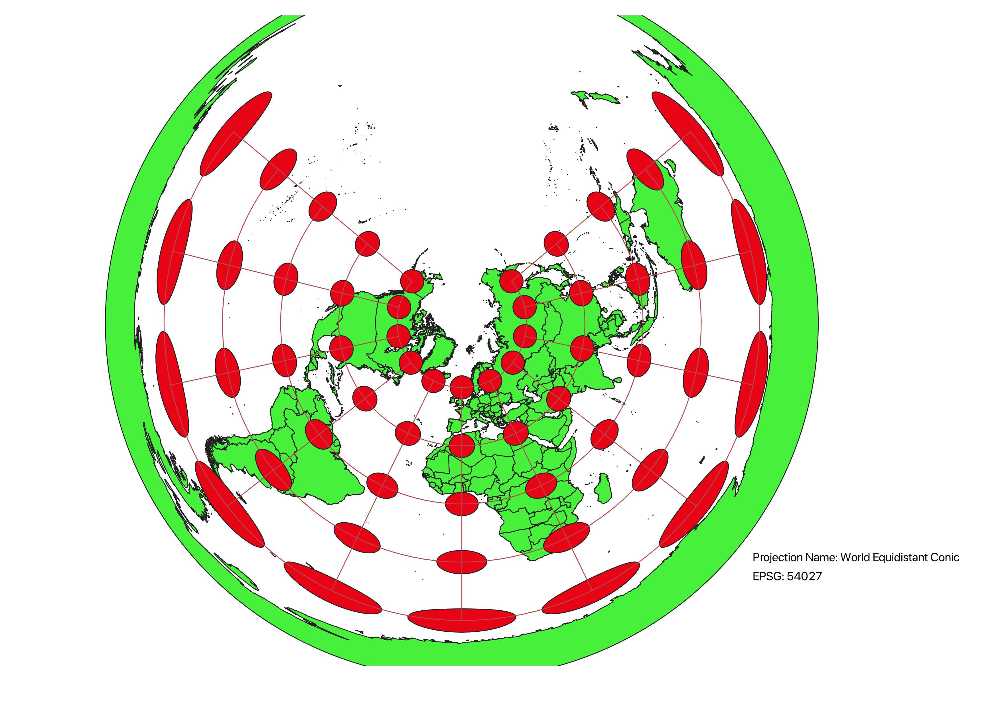
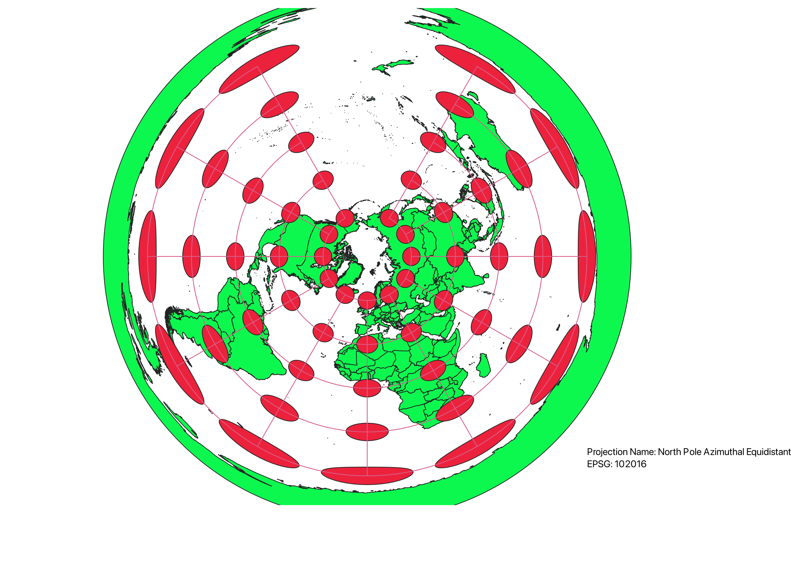
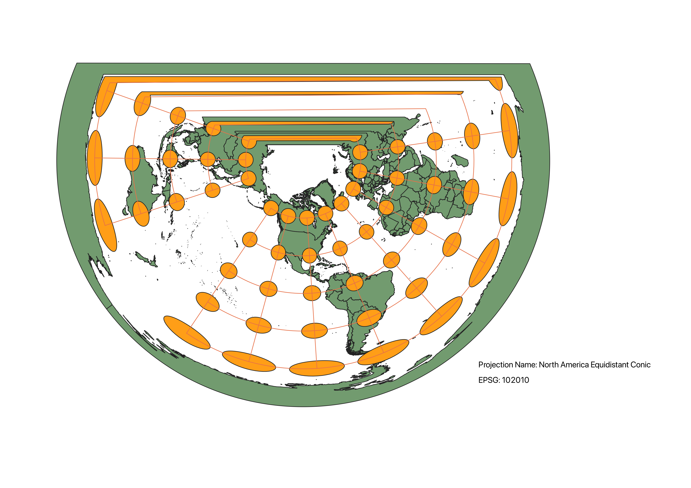
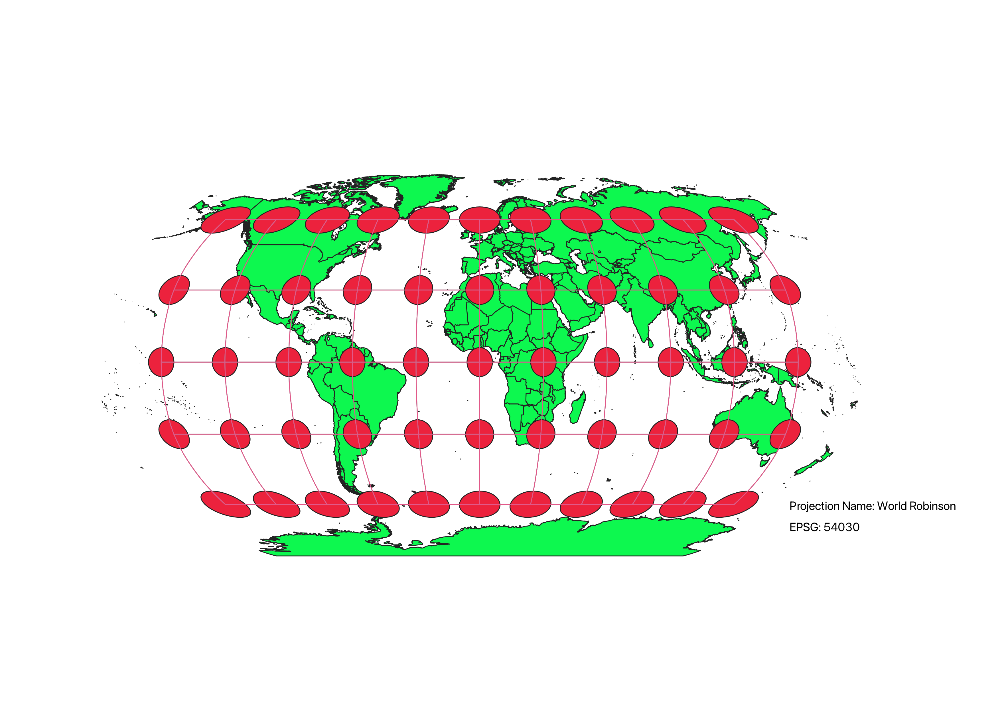

These projections were created in QGIS using a basemap that contained a world cultural vector. Using
add-ons in QGIS of "Globe Builder" and "Indicatrix Mapper", I was able to pull up different projections to use for the
map and then add on indicatrices to the map to display the degree of distortion at different points on the map.
WGS84 Projection
This WGS84 projection displays a full world map in a flat, rectnagular projection. This projection has
a tissot indicatrix on top of the map to display the distortions. It is clear that this projection is more
heavily distorted towards the north and south ends of the map.

Aitoff Projection
This Aitoff projection gives a more spherical shape to the world map that allows us to see greater
distortions throughout, but particularly near the far east and west sides, as well as the north and south.
This projection allows us to see the map in a rounder shape, which is how our earth actually exists.

Pseudo Mercator Projection
This Pseudo Mercator projection gives a farther out view of the world map in a flat
form. The distortions are greater at the north and south ends of the map, but the countries
seem to be less distorted. However, antartica is particularly distorted in this type of projection.

Winkel Projection
This Winkel projection is supported in a spherical shape. This has a more equal distortion, but
is consistent along the equator and while it distorts countries more along the edge of the projection, it
minimizes the distortion for many of the country's shapes and sizes.

World Cylindrical Projection
In this world cylindrical projection, the shape is put into a cylindrical form
on the map. This type of projection allows for high levels of distortion in the northern and southern
ends of the map, particularly with shape. However, the middle area of the map is very consistent and minimizes
shape and size distortion in the half of the map directly above and below the equator.

World Equidistant Conic Projection
In this world equidistant conic projection, the map is displayed in a conic shape, which
views from the northern end of the globe. This projection minimizes the distance distortion across the map
and allows for greater distortion on the bottom end of the map towards the south.

North Pole Azimuthal Projection
In this North Pole Azimuthal Projection, there is a conic shape on the map that gives a view from the northern
part of the map. While this map does distort projection in terms of direction, it minimizes the distortion of
the northern parts of the map, particularly on the North Pole.

North America Conic Projection
In this North American Conic projection, there is a conic shape that is focused on North America
and has a straight edge that completes the opposing side of the map. This map minimizes the distortions
in North America in shape and size, however is highly distorts all other parts of the map, particularly
in shape and direction on the opposing side, looking at Asia and Europe.

World Robinson Projection
In this World Robinson projection, there is a consistent amount of distortion throughout the map
in comparison to many other projections. The map is projected onto a spherical shape to display the world
in its round form. The Robinson map minimizes distortions in direction and size, but still has distortions around
the sperical edges of the map and near the North and South Poles.
